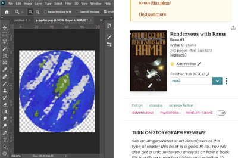
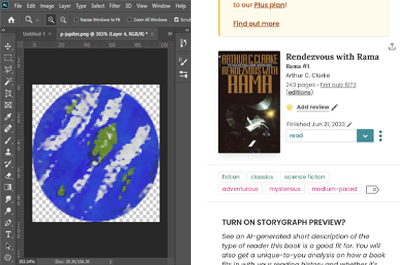

I went through my past 2 years of reading to select 8 books that contained otherwordly planets. I use StoryGraph (image above) to track my reading, so I used that to measure how long it took me to finish the books. I painted each planet from the novels in Photoshop based on what I could find online or from descriptions within the books, and I made the size of the planets correlate to the size of the novel. The speed of each planet's revolution also connects to how long it took me to finish the book. One of the toggles above also shows a static side view of a solar system, which was one of my first iterations before I decided to commit to the animated revolutions (which I found a great template for online!). Finally, I chose a song that I thought went along well with each of the planets, and that song plays when you select a planet!
I decided on a novel solar system design because I wanted to represent the different worlds that I imagined when I read these novels. To go along with this, I thought music would also help represent how I felt about each book, and I combined these two approaches. By selecting the Sun, I give a description on how this data was collected, which also helps place it into context like how Data Feminism describes.